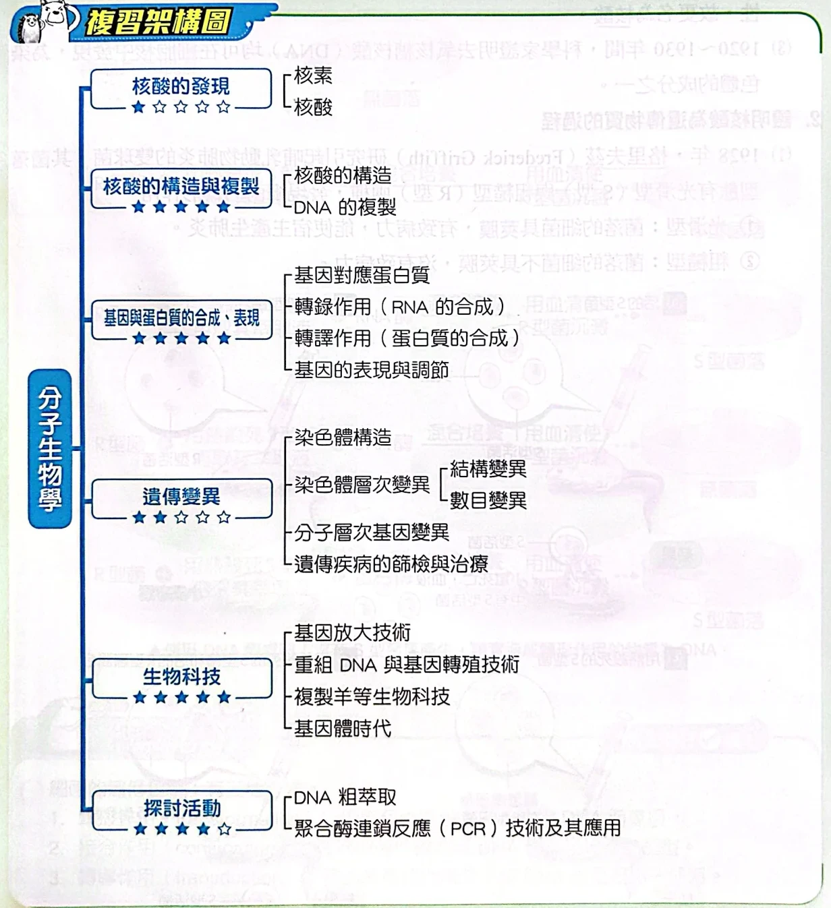
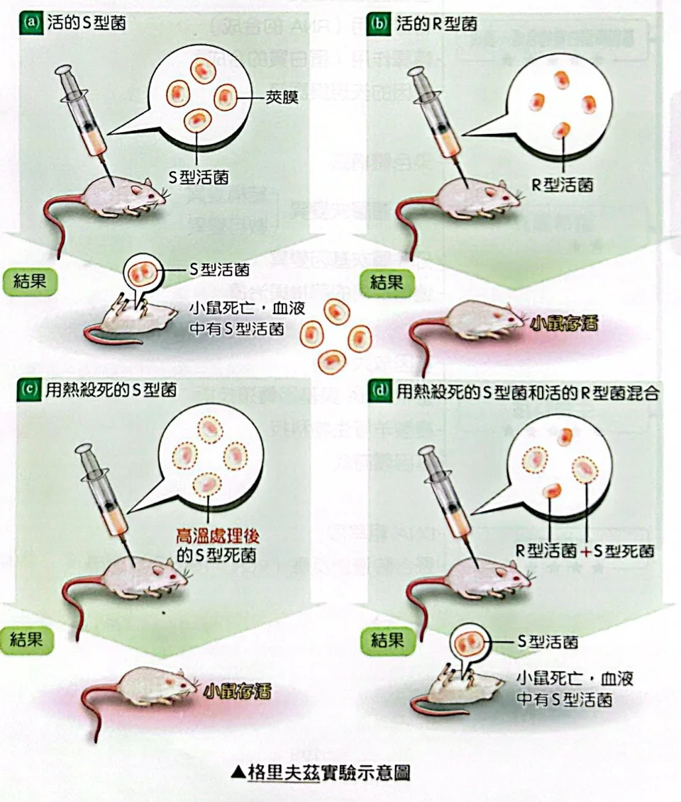
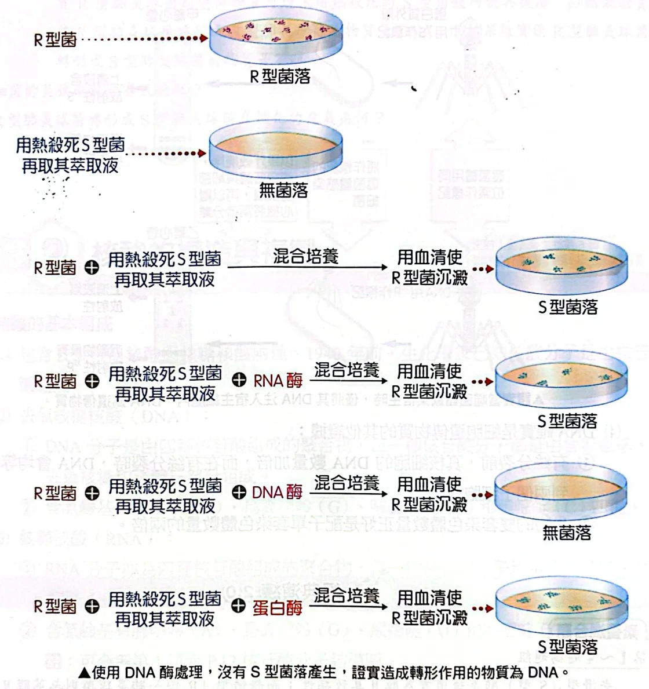
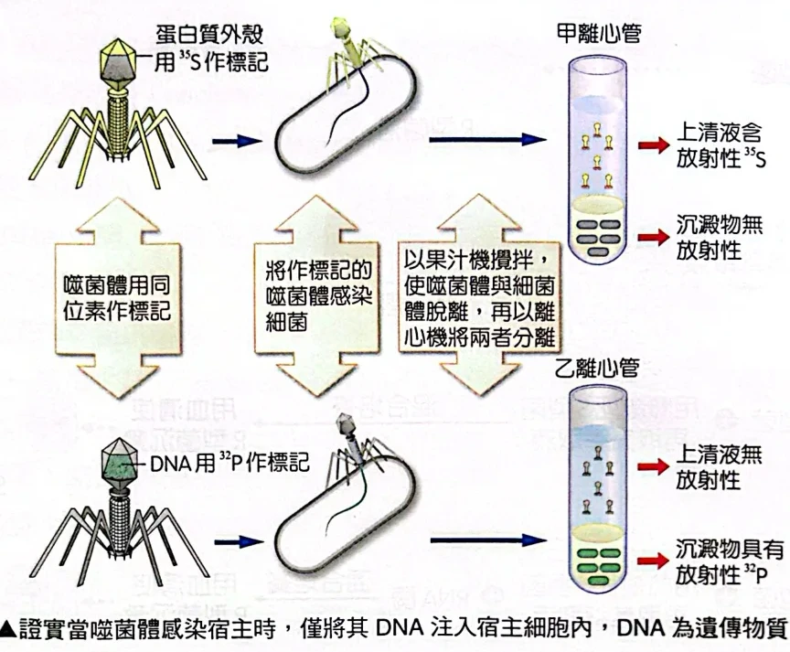
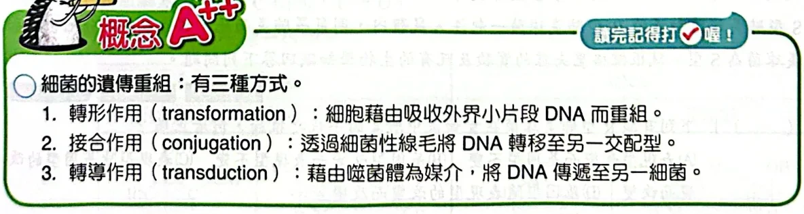
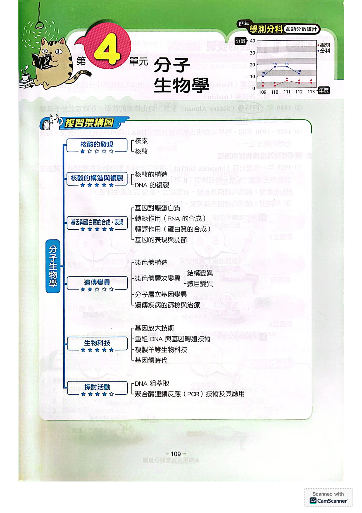
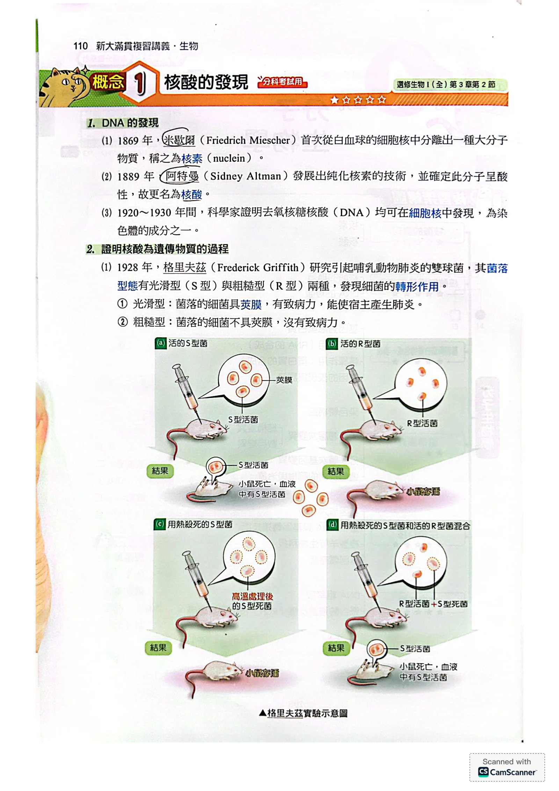
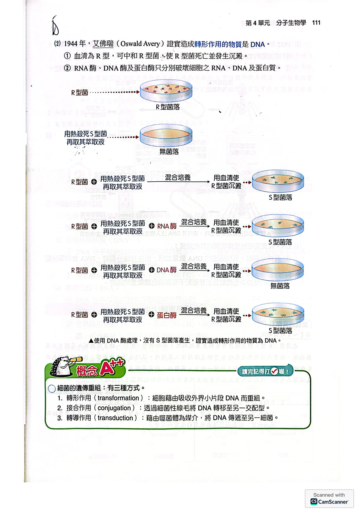
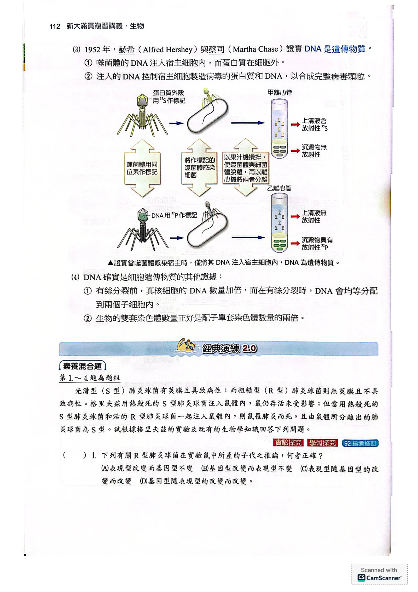
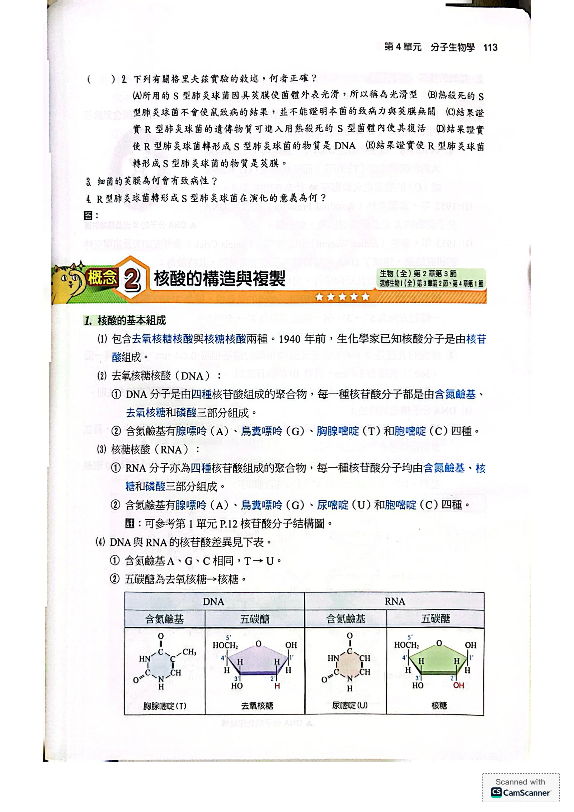

先備：這一單元在找什麼
單元3說：性狀由基因 決定，基因在染色體 上。
染色體由兩種物質組成：蛋白質 和DNA （一種核酸）。
問題來了：真正攜帶遺傳訊息的是哪一個？本篇就是科學家一步步回答這個問題的過程。
先備名詞
名詞 意思 本篇用在哪
遺傳物質 能把性狀「指令」傳給下一代的物質 全篇要找的對象 酶（酵素） 只分解特定物質，例如 DNA 酶只分解 DNA 艾佛瑞「拿掉一種物質」 同位素標記 用帶放射性的原子當記號，追蹤物質跑到哪裡 赫希與蔡司 病毒（噬菌體） 只有蛋白質外殼＋核酸，必須進入細胞才能複製 赫希與蔡司

第4單元架構：核酸的發現 → 構造與複製 → 基因表現 → 遺傳變異 → 生物科技 → 探討活動原講義PDF第1頁・印刷第109頁・點圖放大 核素到核酸：誰先發現
整理：發現史
年代 科學家 做了什麼
1869 米歇爾 從白血球的細胞核 分離出一種大分子，命名為核素 1889 阿特曼 純化核素，發現它呈酸性 → 改名核酸 1920–1930 多位科學家 證明 DNA 都在細胞核中，是染色體的成分 之一
格里夫茲：轉形作用
1928年，格里夫茲 研究引起肺炎的肺炎雙球菌 。它在培養皿上長出的菌落有兩種樣子：
整理：兩種菌
品系 菌落外觀 莢膜 致病力
S 型 光滑（smooth） 有 有：小鼠得肺炎死亡 R 型 粗糙（rough） 無 無

格里夫茲實驗：(a)活S型→死；(b)活R型→活；(c)熱殺S型→活；(d)熱殺S型＋活R型→死，血液中有活S型菌原講義PDF第2頁・印刷第110頁・點圖放大
(a) 活 S 型 → 小鼠死：S 型會致病。
(b) 活 R 型 → 小鼠活：R 型不會致病。
(c) 熱殺死的 S 型 → 小鼠活：死菌不能繁殖，所以不會致病。
(d) 熱殺 S 型＋活 R 型 → 小鼠死，血液中找到活的 S 型菌 。
這種「吸收外來物質而改變遺傳性狀」的現象稱為轉形作用 。
觀念
考前提醒 轉形物質 」，沒有 證明它是 DNA。活菌繁殖 ，光有莢膜不夠。
艾佛瑞：轉形物質是 DNA
1944年，艾佛瑞 改在培養皿中做轉形：把熱殺 S 型菌的萃取液 加入 R 型菌一起培養。
做法的關鍵：在萃取液中各加一種酶，每次只拿掉一種物質 ，看轉形還會不會發生。
培養後先加入「抗 R 型的血清」，讓沒轉形的 R 型菌死亡沉澱 → 盤子上若長出菌落，就是轉形成功的 S 型。

艾佛瑞實驗：只有加DNA酶的那一盤長不出S型菌落原講義PDF第3頁・印刷第111頁・點圖放大 整理：只有拿掉 DNA，轉形才消失
萃取液中加入 被破壞的物質 S 型菌落 推論
（不加酶） 無 有 萃取液含轉形物質 RNA 酶 RNA 有 轉形物質不是 RNA 蛋白酶 蛋白質 有 轉形物質不是蛋白質 DNA 酶 DNA 無 轉形物質是 DNA
赫希與蔡司：噬菌體實驗
為什麼用噬菌體 ：它只由蛋白質外殼 和DNA 組成，感染細菌後能做出新的噬菌體 → 兩者之中必有一個是遺傳物質。
為什麼用 35 S 和 32 P：蛋白質含硫（S）、幾乎不含磷；DNA 含磷（P）、不含硫 → 兩種記號可以分開追蹤。
步驟：標記噬菌體 → 感染細菌 → 果汁機攪拌 （把附在細菌外面的噬菌體外殼打下來）→ 離心 （細菌重，沉到底；外殼輕，留在上清液）。

赫希與蔡司：³⁵S標記蛋白質外殼→放射性留在上清液；³²P標記DNA→放射性在沉澱（細菌）中原講義PDF第4頁・印刷第112頁・點圖放大 整理：放射性跑到哪裡
試管 標記 上清液（外殼） 沉澱（細菌） 推論
甲 35 S（蛋白質）有放射性 無 蛋白質留在細胞外 乙 32 P（DNA）無 有放射性 DNA 進入細胞
進入細菌的只有 DNA，細菌卻做出完整的新噬菌體（外殼＋DNA）→ 指揮製造的是 DNA → DNA 是遺傳物質 （1952年）。
其他證據與細菌的三種重組
有絲分裂前，細胞的 DNA 先加倍 ，分裂時再平均分配 到兩個子細胞 → 符合遺傳物質「完整複製、平分給後代」的要求。
雙套（2n）細胞的 DNA 量正好是配子（n）的兩倍 → 符合「父母各給一半」。

細菌的遺傳重組三種方式：轉形、接合、轉導原講義PDF第3頁・印刷第111頁・點圖放大 整理：細菌得到外來 DNA 的三條路
方式 DNA 怎麼進來 本篇例子
轉形作用 直接吸收環境中的小段 DNA R 型菌吸收 S 型菌的 DNA 接合作用 兩個細菌用性線毛 連接，DNA 從一個傳到另一個 — 轉導作用 由噬菌體 當媒介，把 DNA 帶到另一個細菌 —
經典演練：格里夫茲題組 1–4
題組敘述（92指考修訂）
光滑型（S型）肺炎球菌有莢膜且具致病性；而粗糙型（R型）肺炎球菌則無莢膜且不具致病性。格里夫茲用熱殺死的 S 型肺炎球菌注入鼠體內，鼠仍存活未受影響；但當用熱殺死的 S 型肺炎球菌和活的 R 型肺炎球菌一起注入鼠體內，則鼠罹肺炎而死，且由鼠體所分離出的肺炎球菌為 S 型。試根據格里夫茲的實驗及既有的生物學知識回答下列問題。
下列有關 R 型肺炎球菌在實驗鼠中所產的子代之推論，何者正確？
(A) 表現型改變而基因型不變 (B) 基因型改變而表現型不變 (C) 表現型隨基因型的改變而改變 (D) 基因型隨表現型的改變而改變
看答案與詳解 收起 答 C。
解 鼠體中分離出的是 S 型 ，而且繼續繁殖仍是 S 型 → R 型菌的遺傳物質（基因型） 被改變了，並能傳給後代。 基因型改變後，菌開始做莢膜、變得能致病 → 表現型跟著改變 。 因果方向：先改基因，才改性狀。所以是「表現型隨基因型改變」，選 C；D 把因果顛倒。 A 錯：若基因型沒變，後代會變回 R 型，不可能一直是 S 型。B 錯：表現型（有莢膜、致病）明顯改變了。 小結 轉形作用改的是基因型；性狀（表現型）是基因的結果，所以跟著改。
下列有關格里夫茲實驗的敘述，何者正確？
(A) 所用的 S 型肺炎球菌因具莢膜使菌體外表光滑，所以稱為光滑型 (B) 熱殺死的 S 型肺炎球菌不會使鼠致病的結果，並不能證明本菌的致病力與莢膜無關 (C) 結果證實 R 型肺炎球菌的遺傳物質可進入用熱殺死的 S 型菌體內使其復活 (D) 結果證實使 R 型肺炎球菌轉形成 S 型肺炎球菌的物質是 DNA (E) 結果證實使 R 型肺炎球菌轉形成 S 型肺炎球菌的物質是莢膜
看答案與詳解 收起 答 B。
解 (A) 錯：「光滑、粗糙」是指在培養皿上長出的菌落外觀 （原講義也寫「菌落型態」），不是指一個菌體的表面。 (B) 對：熱殺的 S 型菌雖然還有莢膜，但已經不能繁殖 ，所以不致病。不致病的原因可能是「死了」，而不是「莢膜沒用」→ 不能據此說致病力與莢膜無關。 (C) 錯：方向反了，而且沒有復活。是 S 型菌的物質進入活的 R 型菌 ，使 R 型轉形。 (D) 錯：格里夫茲只知道有轉形物質；證明它是 DNA 的是後來的艾佛瑞 。 (E) 錯：莢膜是轉形後的「結果」（性狀），不是轉形物質。 原頁沒有附這題答案；本題為單選，依上述逐項判斷只有 B 成立。
小結 格里夫茲：有轉形物質；艾佛瑞：是 DNA。死菌不會復活，是活 R 菌被改變。
看答案與詳解 收起 答 莢膜包在細菌外面，能保護細菌不被宿主的白血球吞噬（躲過免疫系統），細菌因此能在宿主體內大量繁殖而致病。
解 宿主體內有白血球會吞噬、清除入侵的細菌。 莢膜是一層包在細胞壁外的黏滑外衣，白血球不容易抓住、辨認它 → 有莢膜的 S 型菌能存活 。 存活才能繁殖 到很大的數量，造成肺炎 → 小鼠死亡。 R 型菌沒有莢膜，很快被清除，所以不致病。 小結 莢膜本身不是毒，它讓細菌躲過吞噬、能繁殖，才致病。
R 型肺炎球菌轉形成 S 型肺炎球菌在演化的意義為何？
看答案與詳解 收起 答 細菌可藉轉形作用從環境中取得其他個體的基因，增加族群的遺傳變異；得到有利的新性狀（如莢膜、抗藥性）的個體較能存活並留下後代，有利於族群適應環境。
解 細菌是無性生殖（分裂），子代原本和親代基因相同，變異來源少。 轉形作用讓細菌吸收別的個體的 DNA → 得到新的基因組合 （遺傳變異增加）。 例：R 型得到做莢膜的基因 → 能躲過宿主免疫 → 在宿主體內存活、繁殖較多。 變異愈多，環境改變時就愈可能有個體能適應 → 對族群的生存與演化有利。 小結 轉形＝細菌的「基因交換」，增加變異，提供天擇的材料。
本篇整理
整理：三個實驗各證明到哪裡
實驗 關鍵操作 證明了 沒有證明
格里夫茲 1928 熱殺 S＋活 R 注入小鼠 有「轉形物質」，可使 R 變 S 轉形物質是什麼 艾佛瑞 1944 萃取液分別加 RNA 酶／蛋白酶／DNA 酶 轉形物質是 DNA （當時仍有人懷疑蛋白質雜質） 赫希、蔡司 1952 35 S、32 P 分別標記噬菌體進入細胞指揮複製的是 DNA → DNA 是遺傳物質 —
下一篇：既然 DNA 是遺傳物質，它長什麼樣子、又怎麼複製？
核對原講義全頁（生物2 PDF1–5） 本節對應印刷109–113頁：PDF1是單元架構圖，PDF2–4是概念1 核酸的發現，PDF4下半–5上半是經典演練2.0素養混合題1–4（92指考修訂）。PDF5下半起是下一篇4-2。原頁沒有附這4題的答案，本頁答案依題幹與正文逐題推導。

PDF第1頁／印刷第109頁 
PDF第2頁／印刷第110頁 
PDF第3頁／印刷第111頁 
PDF第4頁／印刷第112頁 
PDF第5頁／印刷第113頁